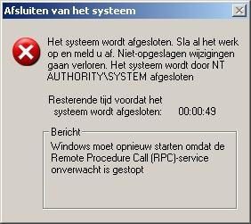

XP: deze keer niet grappig
dinsdag 12 augustus 2003 | Zomaar
Het was weer even schrikken vanavond. Zonder enige aanleiding sprong opeens het onderstaande kadertje tevoorschijn… Elke gebruiker van een Windows systeem krijgt geregeld af te rekenen met dergelijke onverklaarbare en onverstaanbare foutmeldingen. Na al die jaren hebben we echter geleerd hier mee om te gaan: we halen even de schouders op, herstarten, en vergeten wat er zojuist gebeurd is. U herkent deze situatie ongetwijfeld.
Maar vanavond ging dat even anders. Na de (gedwongen) herstart, bleef het onding de kop op steken! Dat maakte dat mijn Windows sessies een levensduur kregen van iets meer dan een minuut! Begin dan maar eens te weten te komen wat het probleem is, laat staan één of andere patch op te zoeken en te installeren.
Koud zweet. Woede. Vloeken.
Gelukkig kreeg ik op dit late uur bijstand van freaky stefan via Messenger. Hij hielp me aan de nodige informatie om het probleem te verhelpen. Ik moest de interne XP firewall – nouja, firewall – activeren, en een patch afhalen van het Download Center van Microsoft, want de Windowsupdate site was door de foutmelding niet langer toegankelijk. De security patch staat er momenteel in de top 5, ik was dus duidelijk niet de eerste die de foutmelding had gekregen.
Ik draai een degelijke virusscanner, ik heb bovendien de (uitstekende) email virus-protectie van Telenet geactiveerd, ik laat AdAware op gepaste tijdstippen mijn volledige systeem scannen op trojans, spyware en andere vuiligheid, kortom: ik heb verkering met Windows, maar ik doe het mét condoom. De enigste fout die ik deze keer gemaakt heb, is dat het een maand geleden was dat ik naar de Windowsupdate site was gesurft. Ja zeg…

Wouter Demuynck op 12 augustus 2003
Een ‘personal firewall’ dingske is ook handig. De internetcomputer hier in huis gebruikt Sygate Persona Firewall (http://smb.sygate.com/buy/d…). Zelf heb ik Kerio Personal Firewall draaien (niet dat het veel nut heeft; ben niet rechtstreeks met internet verbonden)
Altijd handig is ook ShieldsUp van Steve Gibson (https://grc.com/x/ne.dll?bh…): een webpagina waar je je systeem kunt laten portscannen. Ik ben pas gelukkig als alle speciale poorten ‘Stealth’ weergeven :)